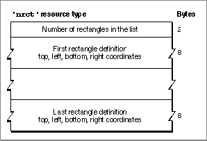

The Rectangle Positions Resource
Your control panel can consist of one or more rectangles. To define a list of rectangles that determine the display area for your control panel, create a rectangle positions resource of type'nrct'. A rectangle positions resource must have a resource ID
of -4064. Figure 8-17 shows the structure of a compiled rectangle positions resource.Figure 8-17 Structure of a compiled rectangle positions (
'nrct') resource
A compiled version of a rectangle positions resource contains these elements:To provide for backward compatibility with the Control Panel desk accessory, the Finder accepts only the coordinates (-1,87) as the origin of a control panel. If you are designing for System 7 only, you can extend the bottom and right edges of a control panel as far as you like. If you want your control panel to run in System 7 and previous versions of system software, you must limit your control panel's size to the area bounded by
- Number of rectangles in the list.
- Coordinates for each rectangle. You specify the coordinates as top, left, bottom, and right.
(-1,87,255,322). These are the coordinates used by the Control Panel desk accessory.In System 6, the Control Panel desk accessory draws a frame that is 2 pixels wide around each rectangle. To join two parts of a panel neatly, overlap their rectangles by 2 pixels on the side where they meet.
For more information about the rectangle positions resource, see "Defining the Control Panel Rectangles" beginning on page 8-15.